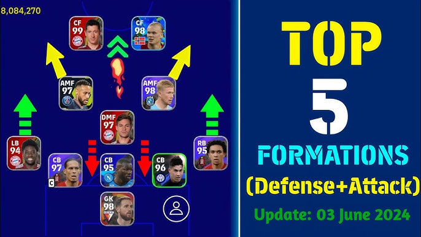
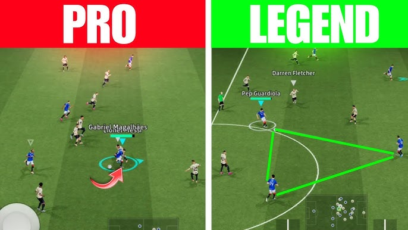
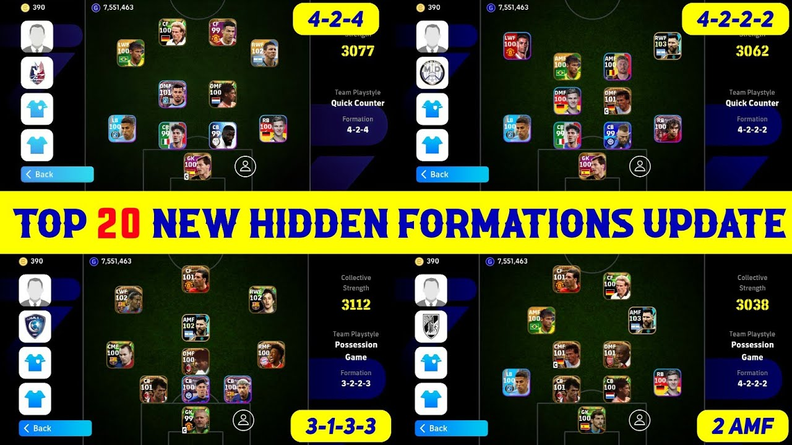

Welcome to eFootball™ PRO Tips by MOONY™. Become an elite player with secret tips you may not have known before that can influence how you play and experience the game. Follow each step in our premium lessons to reach an elite level. Always remember that practice makes perfect.
1.DEFENSIVE PLAY
•Avoid holding the team press button constantly,as it destroys your defensive shape.Only activate when your opponent is in the final third or touchline.
•Stop chasing the ball carriers with your defenders.Select your defensive midfielder manually,run backward, and block the diagonal passing lane into the striker.
•When an attacker breaks through on a one-on-one attack,manually shift your goalkeeper toward the far post to cut off their favourite shooting angle.

2.ELITE ATTACKING
• This is one of the most effective dribbles in the game. Press the sprint button and flick your analog stick in the direction of the defender.
• Do not just press the shoot button. Swipe left or right to unleash a powerful shot.

• When cutting inside with a winger, press the shoot button and swipe it downward to perform a soft curl.
• Tap the Shoot button, then instantly swipe or flick the Left Analog Stick in any direction to cancel the shot and trick the defender.
3.MANAGING COINS
• Avoid standard packs entirely. Save your coins for 150-player Epic boxes containing top-tier legends.
• Spend coins in small amounts only on TOTW packs that offer guaranteed, pre-trained meta players.
• Purchase a Match Pass if it offers an S-tier player or an essential Nominating Contract.
4.TACTICAL PLAY
• If you're having issues with your defence, get two highly rated DMFs to protect your CBs. It may look like a normal tip, but the AI will help your players maintain better positioning while defending.
• Always check your squad's condition arrows and replace players who are not in good condition.
• Set up your team in any of these formations. They can help a lot:
* 4-2-2-2: This formation is best used by a team with a very good pair of attacking midfielders.
* 4-3-1-2: If you usually struggle to break down low-block teams, this is one of the best formations to use. It is also a good formation for man-to-man pressing.
* 4-2-1-3: This is one of the most balanced formations to use in the game. It gives you width through your wide players while maintaining a compact defence.

EXTRA PRO TIPS
• DASH + MATCH-UP: Use this combination to cancel certain pass or shot animations.
• Bring on substitutes after the 60-minute mark for a potential impact on the game.
• Position fast wingers outside the box when defending a corner to prepare for a quick counterattack.
• Manually select your centre-back at kickoff and run back immediately to avoid conceding kickoff goals.
You Need More PRO Tips? 🔥
• Sign up for MOONIFY™ today!
• Experience live lessons from our specialists around the world!